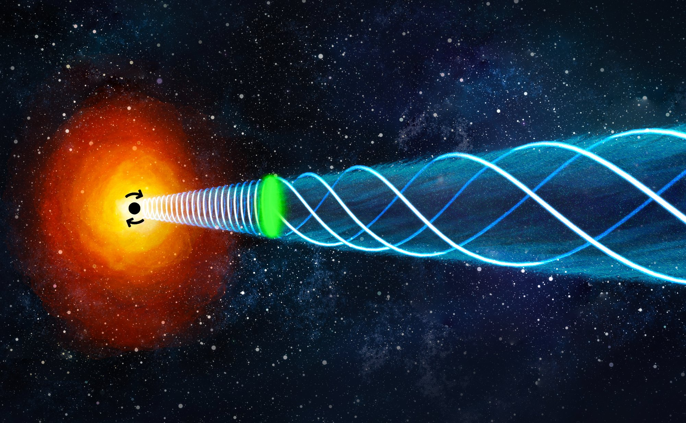
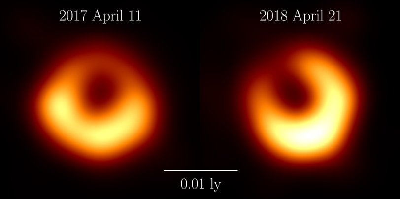
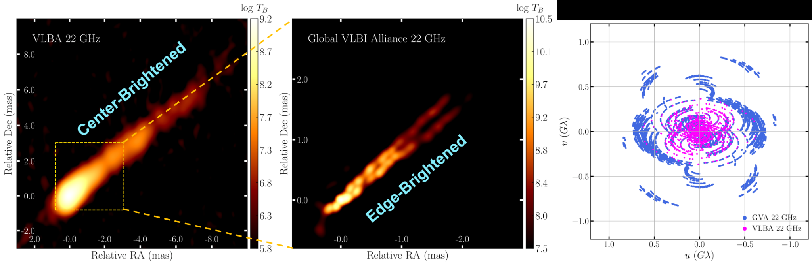

We combine the world's sharpest radio telescope arrays with cutting-edge calibration
and imaging techniques to probe the extreme physics of supermassive black holes.
🕳️
Direct Imaging of Supermassive Black Holes
We use millimeter VLBI arrays — including the Event Horizon Telescope and
Global Millimeter VLBI Array — to directly image supermassive black holes
at event-horizon scales. Our group co-leads the EHT imaging effort,
developing novel calibration tools such as GPCAL to produce the highest-fidelity
images of black hole shadows and their surrounding plasma.
EHT · GMVA · GPCAL · M87* · Sgr A*
🧲
Polarimetry & Magnetic Fields
Magnetic fields are thought to drive the most energetic phenomena around
black holes — from launching jets to regulating accretion. We develop
and apply advanced polarimetric techniques to map the magnetic field
geometry, strength, and evolution in AGN jets via Faraday rotation
measurements, rotation measure synthesis, and multi-frequency VLBI polarimetry.
Faraday Rotation · EVPA · Helical B-field · ALMA
⚡
Formation of Relativistic Jets
How are jets launched, collimated into narrow beams, and accelerated to
nearly the speed of light? We tackle this question by tracing jet kinematics,
transverse structure, and collimation profiles from sub-parsec to kiloparsec
scales, combining multi-epoch VLBI monitoring with the Global VLBI Alliance
to achieve unprecedented angular resolution.
M87 · NGC 315 · 3C 84 · GVA · SKA
// Research Highlights
Recent Key Results
Selected recent results from our group and EHT collaborations.
1st Author · 2026
Magnetic DNA of M87: Unveiling a Helical Field in the Jet's Engine Room
Why does it matter? Supermassive black holes launch powerful jets of plasma at nearly the speed of light, but the engine behind this acceleration remains one of the biggest open questions in astrophysics. Theory predicts that magnetic fields play a key role — specifically, they should twist into a toroidal (donut-like) shape as the jet speeds up. But does this really happen?
What we found: We observed M87's jet simultaneously at six radio frequencies (1.4–24.4 GHz) using VLBI telescopes around the globe, then carefully removed the distorting effects of Faraday rotation to reveal the jet's intrinsic magnetic field structure. For the first time, we continuously mapped the "acceleration–collimation zone" — the region where the jet is still speeding up and being focused — spanning roughly 9,000 to 360,000 gravitational radii from the black hole. What we found surprised us: the magnetic field has a clear helical shape, but it retains a much stronger poloidal (along-the-jet) component than standard models predict. This means that something — likely magnetic energy dissipation — is preventing the expected rapid winding of field lines. As a bonus, the handedness of the helix provides an independent measurement of the black hole's spin direction, agreeing with what EHT saw at the event-horizon scale.

Artist's illustration of M87's helical magnetic field. The tightly wound helical field near the black hole gradually unwinds as the jet accelerates outward. Credit: Park et al. 2026, ApJ.
Watching the Black Hole Evolve: M87* Shadow Over Four Years
Why does it matter? When the EHT released the first-ever image of a black hole in 2019, a natural question followed: does it always look the same? General relativity predicts that the bright ring's size — set by the black hole's mass and the curvature of spacetime — should remain constant. But the brightness pattern around the ring, driven by turbulent plasma, could change dramatically from year to year. Testing this prediction requires observing the same black hole repeatedly.
What we found: Comparing EHT observations from 2017, 2018, and 2021, the ring diameter stayed remarkably stable, providing the strongest confirmation yet of the persistent black hole shadow predicted by Einstein's theory. However, the brightest spot on the ring rotated substantially — shifting from the southeast (2017) to the southwest (2018) and further evolving by 2021. The polarization pattern also changed dramatically, revealing dynamically rearranging magnetic fields near the event horizon. These results are consistent with magnetically arrested disk (MAD) accretion models, where strong magnetic fields regulate the inflow of matter.
PI Contribution: Prof. Park served as a co-leader of the EHT Imaging Working Group. His group's GPCAL software was employed as one of the main polarization calibration pipelines for this study, enabling the high-fidelity multi-epoch polarimetric images.
M87* in polarized light across three epochs (2017, 2018, 2021). The ring size remains constant — confirming the persistent shadow — while the polarization pattern (tick marks) dramatically evolves, including a direction reversal between 2017 and 2021. Credit: EHT Collaboration (CC BY 4.0).
EHT Collaboration · 2024 · ★ Early Career Award 2025
The Persistent Shadow: Re-detecting M87's Black Hole One Year Later
Why does it matter? A single observation of a black hole, however groundbreaking, could be a fluke — an artifact of calibration, imaging assumptions, or transient plasma structures. The only way to be sure we are truly seeing a black hole's shadow is to observe it again and check whether the fundamental structure persists. This is also a direct test of general relativity: if Einstein is right, the ring size is determined purely by the black hole's mass, so it should not change over human timescales.
What we found: The EHT observed M87* again in April 2018 — exactly one year after the historic first detection — with the Greenland Telescope newly added to the array. The 2018 image confirmed the same ring-and-shadow structure with a consistent diameter of ~42 microarcseconds, providing a powerful independent verification of the 2017 result. At the same time, the position of the brightest part of the ring shifted from southeast to southwest, revealing the dynamical nature of the plasma flowing around the black hole. This was the first time a black hole's temporal evolution was directly observed at event-horizon scales.
PI Contribution: Prof. Park served as a co-leader of the EHT Imaging Working Group, directly overseeing the process of converting raw interferometric data into the final black hole image. GPCAL was a key calibration tool for the polarization analysis of the M87* data. In recognition of his contributions to EHT imaging and calibration, he was awarded the EHT Early Career Award (2025).

M87* observed in 2017 (left) and 2018 (right). The ring diameter (~42 μas) is unchanged, confirming the persistent shadow predicted by general relativity. The brightest region shifted ~30° counterclockwise, consistent with turbulent plasma dynamics. Credit: EHT Collaboration (CC BY 4.0).
EHTM87*General RelativityImaging Co-LeadGreenland TelescopeEC Award 2025
1st Author · 2024
Are All AGN Jets Edge-Brightened? The NGC 315 Surprise
Why does it matter? When we look at jets from distant blazars (AGN viewed nearly head-on), they appear brightest along their central axis. But jets in nearby radio galaxies (viewed from the side) often look brighter at their edges. The leading explanation is the "spine-sheath" model: the jet center moves so fast that its emission is beamed away from us when viewed at a large angle. But there is a more exciting possibility — maybe all jets are intrinsically edge-brightened, and we just did not have sharp enough "eyes" to see it until now.
What we found: We organized a coordinated observation of the giant radio galaxy NGC 315 using 22 radio telescopes across five continents — the Global VLBI Alliance (GVA) — at 22 GHz. This massive array, combining the EVN, VLBA, phased VLA, KVN, and LBA, provided dramatically better angular resolution than any previous observation of this source. By applying superresolution imaging techniques, we transversely resolved the parsec-scale jet for the first time. The result: NGC 315's jet, previously thought to be center-brightened, is clearly edge-brightened. Given the jet's relatively large viewing angle (~50°), simple Doppler boosting models struggle to explain this — suggesting that particle acceleration mechanisms operating preferentially at the jet edges may be at play.

NGC 315 jet at 22 GHz: VLBA (left) vs. Global VLBI Alliance (center). Previously center-brightened with VLBA-only resolution, the jet now shows clear edge-brightening with the 22-station GVA array. Right: dramatically improved uv-coverage (blue) compared to VLBA alone (magenta). Credit: Park et al. 2024, ApJL.
My research centers on the direct imaging of supermassive black holes and the physics of relativistic jets
in active galactic nuclei (AGN), with a particular focus on the nearby radio galaxy M87. I apply very long
baseline interferometric (VLBI) techniques — at millimeter and centimeter wavelengths — to investigate the
mechanisms responsible for launching, collimating, and accelerating jets to relativistic speeds. I am also
deeply engaged in the calibration and imaging of VLBI data, and have developed
GPCAL,
a novel polarization calibration pipeline that served as one of the main calibration tools for both the
first polarized image of the M87 black hole
(EHT Collaboration 2021) and the
multi-year polarimetric variability study of M87*
(EHT Collaboration 2025).
Roles in International Collaborations
I serve as a co-leader of the Imaging Working Group of the Event Horizon Telescope,
where I oversee the process of converting raw interferometric data into science-ready black hole images.
I am also actively involved in the
Global Millimeter VLBI Array (GMVA) and the Global VLBI Alliance (GVA) for high-resolution AGN jet studies.
Awards
EHT Early Career Award (2025) — Event Horizon Telescope Collaboration, for significant contribution as a co-leader of the imaging team for the 2018 EHT M87 black hole observations EHT Early Career Award (2021) — Event Horizon Telescope Collaboration, for significant contribution to the first polarimetric imaging of the M87 black hole 젊은 천문학자상 (Young Astronomer Award, 2024) — Korean Astronomical Society (한국천문학회) POSCO Science Fellowship (2024) — POSCO TJ Park Foundation (포스코청암재단), awarded to outstanding early-career professors at Korean universities for exceptional research capabilities
Academic Background
I received my B.S. (2013) and Ph.D. (2019) in Astronomy from Seoul National University,
working under the supervision of Prof. Sascha Trippe. I then held postdoctoral and fellowship positions
at the Academia Sinica Institute of Astronomy and Astrophysics (ASIAA) in Taiwan (2019–2022), including an
EACOA Fellowship, where I contributed to the Greenland Telescope (GLT) project.
I joined the Korea Astronomy and Space Science Institute (KASI) as a tenured scientist in 2022,
and have been on the faculty at Kyung Hee University since 2023.
Public outreach talk at the National Gwacheon Science Museum (April 2024) on
"Seeing the Black Hole: EHT Black Hole Observation," attended by approximately 250 people
including many K–12 students.
// Our Team
Group Members
Our group brings together postdocs, graduate students, and undergraduates,
united by a shared passion for understanding the extreme universe.
Postdoctoral Researchers
Kunwoo Yi
Postdoctoral Researcher
Relativistic Jets, Bayesian VLBI Imaging
Graduate Students
Imkwang Kang
Ph.D. Student · 3rd year
Deep Learning Algorithm, Development of VLBI Imaging Technique, Imaging of the M87 Jet
Yunjeong Lee
Ph.D. Student · 3rd year
The Relativistic Jet in the Archetypal Quasar 3C 273, Faraday Rotation, Magnetic Fields
Segyoung Kim
Ph.D. Student · 1st year
Calibration and Imaging of EHT Data & mm-VLBI Data, AGNs
Jeongwoo Yoo
Master Student · 3rd year
Fanaroff-Riley Type I & II Dichotomy, AGN Jet Science Utilizing the Global VLBI Alliance
Yeji Cho
Master Student · 2nd year
Supermassive Black Holes in Cold-gas Rich Environment, AGN Feedback
Yubin Jeong
Master Student · 2nd year
Supermassive Black Hole Environment, Depolarization in AGN Jets
Undergraduate Students
Jonghan Kim
Undergraduate · 4th year
Stratification of Black Hole Relativistic Jets
Woojae Song
Undergraduate · 4th year
ALMA Polarimetry
Yeonjae Jeong
Undergraduate · 2nd year
The M87 Jet Kinematics
Join Our Group
We are always looking for highly motivated students and researchers interested in
black hole physics, VLBI techniques, and AGN jets. Graduate student positions (M.S./Ph.D.) are available.
A novel instrumental polarization calibration pipeline for VLBI data.
GPCAL overcomes limitations in existing calibration tools and has served
as one of the main polarization calibration pipelines for the EHT — from the
first polarized image of M87* (2021) to the multi-year variability study (2025).
Linear polarization image of the M87 jet at 43 GHz from VLBA observations, calibrated using GPCAL. Tick marks indicate the electric vector position angle (EVPA), tracing the magnetic field structure. This result revealed a polarimetric structure in the subparsec core that was not detectable with existing calibration tools. (Park et al. 2021, ApJ, 922, 180)
// Selected Talks
Talks & Presentations
Press Conferences
Mar 2021
First M87 EHT Results: Polarization of the Ring & Magnetic Field Structure near the Event Horizon